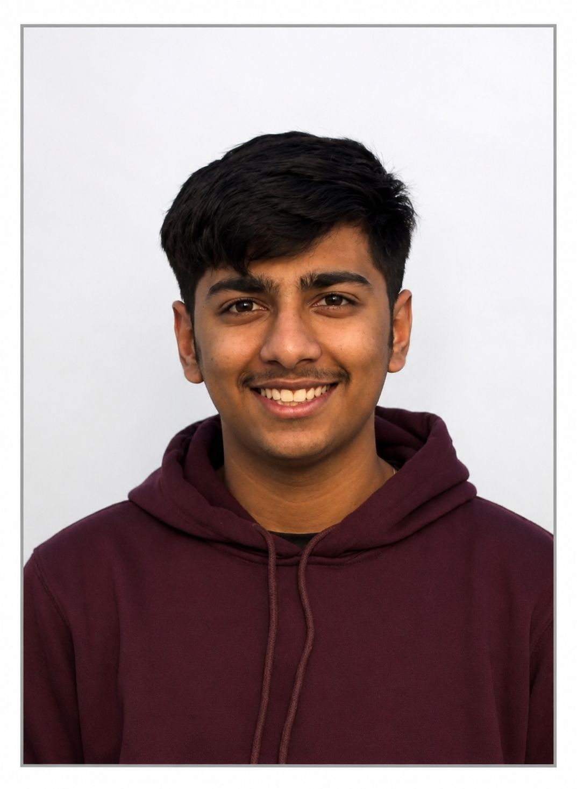

About Me.

My Journey
Hi, I'm Ketan Puri, a passionate Web Developer, Software Developer, and Cybersecurity Enthusiast currently pursuing a Degree In Bachelor of Computer Applications with specialization in Artificial Intelligence and Machine Learning at CGC University , Mohali
My journey into technology started with a simple curiosity—how websites actually work. What began as experimenting with basic web pages and editing templates slowly turned into a genuine passion for building things on the internet. Over the years, I spent countless hours learning, creating, breaking, and improving projects, which helped me develop both my technical skills and problem-solving mindset
I have been working on websites and digital projects for several years, creating blog platforms, service websites, and personal projects that allowed me to learn by doing. Rather than following a traditional path, most of my learning came from real-world experience, online resources, experimentation, and a strong desire to keep improving every day. One of the projects I am most proud of is HeWrites.blog, a storytelling platform where people can share their experiences, horror stories, and creative content. The idea was to create a space where anyone could tell their story and connect with readers. Building and managing this platform taught me a lot about web development, content management, user experience, and community building.
I also worked on CoderXHub, a project focused on web development resources, templates, and coding-related content for developers and learners. Another project, BhagwaYehInd, was designed as a platform where users could share facts, stories, achievements, and short-form content related to India, its culture, and its history. Alongside development, I have always enjoyed participating in competitions and learning opportunities. Being recognized in events such as HPE CodeWars and other technology competitions motivated me to continue exploring new ideas and pushing my skills further. Recently, I developed a strong interest in Cyber Security because I believe building great software also means understanding how to keep it secure. To strengthen my knowledge in this field, I am currently completing the Google Professional Cybersecurity Certificate, where I am learning about security operations, threat detection, risk management, and modern cybersecurity practices. When I'm not coding, I enjoy exploring new technologies, working on side projects, learning about cybersecurity, and turning ideas into real digital products. I genuinely enjoy the process of creating something from scratch and seeing it become useful for others. My goal is simple: to keep learning, keep building, and create technology that is useful, secure, and meaningful. Whether it's a website, a platform, or a new idea, I love the challenge of bringing it to life through code.
Experience & Education
My experience spans across web development, content management, UI/UX design, and digital product creation. HeWrites.blog A community-driven storytelling platform where users can share personal experiences, horror stories, and creative content. Contributors can submit stories that are reviewed and published, creating a safe and engaging environment for readers and writers. CoderXHub A web development resource platform focused on coding tutorials, website templates, development resources, and practical learning content for aspiring developers. BhagwaYehInd A community platform designed to showcase India's culture, achievements, history, facts, and short-form educational content through user-generated posts and videos. Freelance Development Designed and developed multiple business websites, blog platforms, and custom web solutions while managing deployment, optimization, and user experience improvements.
Bachelor of Computer Applications with specialization in Artificial Intelligence and Machine Learning
Achievements & Leadership
🏆 Ranked among top participants in HPE CodeWars India Edition
🏆 Secured Rank 6 Recognition in HPE CodeWars Hackathon
🏆 Merit Recognition in National Scientific Creativity Competition (Jigyasa Vigyan Mahotsav)
🏆 Multiple National-Level Hackathon Participations
🏆 Academic Excellence Recognition
I actively contribute to technology communities through content creation, blogging, and project development. Through my platforms, I encourage learning, creativity, and knowledge sharing among students, developers, and technology enthusiasts. My goal is to continue building impactful digital products while growing as a developer and cybersecurity professional.